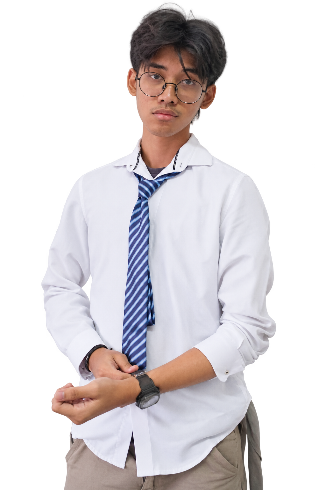

Hardware Engineering
KSM Internet of Things · UPN Veteran Jakarta

Mahasiswa Teknik Elektro UPN Veteran Jakarta.
Staff Hardware Engineering di KSM IoT.
Saya Fahrez, mahasiswa Teknik Elektro di UPN Veteran Jakarta.
Sebagai Staff Hardware Engineering di KSM Internet of Things UPN Veteran Jakarta, saya merancang model 3D untuk kebutuhan proyek serta PCB untuk sistem embedded.
Pengalaman saya mencakup proyek robot sumo dan transporter, partisipasi kompetisi robotika, serta GEMASTIK bersama tim OtwLimo. Saat ini, saya juga mengeksplorasi konsep AGV dengan kendali neuro-fuzzy dan motor driver anti-EMI.
Universitas Pembangunan Nasional Veteran Jakarta
Ruang belajar melalui hardware dan pengembangan konten.
KSM Internet of Things · UPN Veteran Jakarta
Sudut Pandang
Alat dan keterampilan yang saya gunakan untuk merancang, mengembangkan, dan mengeksplorasi sistem.
Dari model digital dan persiapan fabrikasi, hingga pengembangan perangkat embedded.
Merancang model dan komponen untuk kebutuhan proyek robotika.
Merancang PCB untuk kebutuhan sistem embedded dalam tim hardware.
Menghubungkan kebutuhan hardware dengan pengembangan perangkat melalui Arduino IDE.
Pengalaman robot sumo dan transporter, serta eksplorasi konsep AGV neuro-fuzzy.
Rancangan, kolaborasi, dan proses belajar.
Klik proyek untuk melihat ceritanya.
Belajar melalui perancangan hardware, kerja tim, dan pengalaman kompetisi.
KSM Internet of Things · UPN Veteran Jakarta
Merancang model 3D untuk kebutuhan proyek dan PCB untuk sistem embedded. Terlibat dalam proyek robot sumo, transporter, serta eksplorasi AGV dan motor driver anti-EMI.
Sudut Pandang
Berperan dalam pengembangan konten di Sudut Pandang.
Tim OtwLimo
Berpartisipasi dalam GEMASTIK divisi Kota Cerdas bersama tim OtwLimo. Dokumentasi tim menampilkan dashboard pemantauan dan kendali perangkat, status operasi, prediksi cuaca, serta data sensor.
UPN Veteran Jakarta
Mendalami elektronika, sistem embedded, dan sistem kendali melalui pembelajaran serta proyek tim.
Partisipasi bersama tim untuk menguji gagasan, berkolaborasi, dan mengembangkan pengalaman teknis.
Pembelajaran teknis, kesadaran keselamatan, dan apresiasi atas kontribusi dalam tim.
Robot, kolaborasi, dan proses di balik setiap pengalaman. Klik foto untuk melihat dokumentasi lengkap.
Obrolan kecil bisa jadi
awal dari sesuatu yang besar.